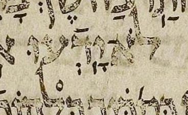

{kind=link}

| יָ֥דְּֿעוּ
(?) יָ֥דְֿעוּ |
# 24:16 | דגש fights רפה in μL, maybe, says BHQ’s contribution |
I have shown the consensus with רפה to make my point clearer, but a consensus edition would not typically show it. (It would, as usual, merely imply it rather than show it.)
In contrast, I show the רפה on the proposed reading, because I feel it should be shown in any edition that, like BHQ, has דגש. This רפה is important, to highlight the weirdness of the situation. In other words, by showing the רפה on the proposed reading, I am sort of charitably transcribing BHQ.
A דגש on a letter with רפה doesn’t make sense. The dot in question is suspiciously larger than nearby ones, and looks different from them in other ways. See 19:5.
BHQ notes this possibility, whereas this is not noted in the other editions under consideration. It could be the editors of those other editions did not catch this, or it could be that they caught it but considered it to be too slight a possibility to note it.
U — M — μL 404A col. 1 line -12 (12 counting from bottom of column)
μA (Aleppo) (page 276v, col 1, line 3, word 5):
